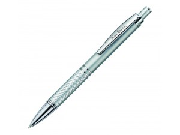

РУЧКА (Канцелярия)
Ручка — письменная принадлежность, с помощью которой можно оставить чернильный след на поверхности (обычно на бумаге). Различают следующие типы ручек:
- перьевые ручки,
- шариковые ручки,
- капиллярные ручки,
- фломастеры,
- гелевые ручки или ручки-роллеры,
- ручки с биополимерными чернилами.
-Термин и история-
Писчие перья известны с глубокой древности, примерно с 3000 года до н. э., и вырезались из стеблей тростника. Английское слово «pen» (ручка, птичье перо) произошло от латинского «penna» (перо птицы), поскольку большое распространение приобрели гусиные перья, которые затачивались у корня. С VI века до н. э. перья использовали на протяжении более тысячи лет многие цивилизации. Лучшие образцы изготавливались из перьев лебедей, индюков и гусей, как имеющих в крыльях перья наибольшего размера. Археологические находки в руинах Помпеи включают бронзовые варианты перьев, однако распространение они получили лишь к концу XVIII века. Столетие спустя появились авторучки, капиллярную систему для которых придумал Л. Е. Уотерман (L.E. Waterman), нью-йоркский торговец канцелярскими товарами.
Около 1944 года венгр Ласло Биро (László Bíró), опираясь на последние методы изготовления шарикоподшипников для машин и оружия, добавил к капиллярному каналу шариковый механизм и представил миру шариковую ручку.
Русский же термин «ручка» (произошедший от слова рука) означал первоначально лишь перодержатель[1] — ту часть пишущего устройства, которая использовалась как рукоятка для собственно пишущего узла (сменного металлического пера) в общем значении слова «ручка» — «часть какого-либо предмета, предназначенная для его держания рукой или руками». Затем слово «ручка» стало применяться целиком ко всему пишущему устройству любой конструкции, хотя сменное перо как таковое уже вышло из употребления.
1.Шариковая ручка
Изобретена венгерским журналистом Ласло Биро (Laszlo Biro). В аргентинском городе, где многие годы жил журналист, такие ручки называются в честь него «биромами», эпонимическое название «биро» распространено и в Европе. 
Первоначально предназначалась для Королевских военно-воздушных сил Великобритании, поскольку обычные перьевые авторучки не функционировали в самолётах на большой высоте.
Существует два типа шариковых ручек — одноразовые и со сменными стержнями.
Несмотря на свою простоту, шариковая ручка получила популярность как подарок на знаменательные события (день рождения, повышение на работе, знак внимания и др.). Также ручка стала показателем социального статуса в некоторых кругах общества. Такие ручки делают из драгоценных металлов, а также наполняют разнообразием драгоценных камней.
Культура
- С 1960-х годов Фишер разработал ручки Space, которые могли работать при нулевом атмосферном давлении, в условиях невесомости и экстремальных температур. До разработки американское аэрокосмическое агентство NASA использовала для своей лунной программы карандаши, однако последние часто ломались и представляли опасность для космонавта (щепки могли попасть ему в глаз). Кроме того, дерево представляло опасность возгорания в кислородной атмосфере. Надо заметить, что эти ручки не единственные, которые могут применяться в космосе, обычные шариковые ручки также неплохо справляются, астронавт Педро Дук).
- Также существует интересная легенда-анекдот, согласно которой NASA потратила миллион долларов на разработку специальной шариковой ручки для невесомости, а русские применили в космосе карандаш. Эта «притча» обычно приводится в качестве иллюстрации рационального подхода к решению проблем. Реальных оснований под собой не имеет[2].
- Ручки с возможностью стирания собственных чернил обратным концом стали «коньком» с начала 1980-х до начала 1990-х. Выпускались с синими, чёрными и красными чернилами. Ручки почти исчезли из употребления из-за низкого качества чернил, негарантируемой «стираемости» и отсутствия конкретной области применения.
- Существует весьма популярное хобби, зародившееся в Японии[3] и распространившееся по всему миру — пенспиннинг, или «кручение ручки». Это вид манипуляции, где главную роль играет ручка и ловкость пальцев.
- В начале 21-го века получили распространение «тактические ручки». По сути, простые ручки с колпачком, но изготовленные из алюминия, титана или нержавеющей стали. Отличаются значительной толщиной стенок корпуса, максимальной устойчивостью к любым нагрузкам, что позволяет использовать их в качестве кастета-явары.
- Весьма часто шариковыми ручками перематываются аудиокассеты в случае неисправности лентопротяжного механизма магнитофона.